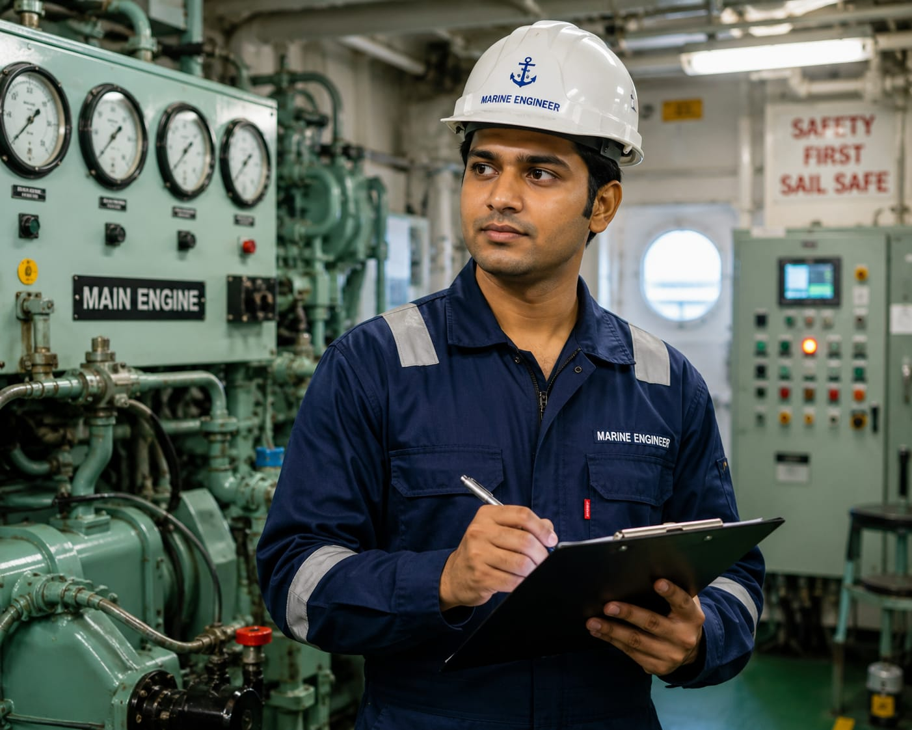

- Have you ever seen a large ship carrying large containers?
- These ships travel across oceans and transport products from one country to another.
- A ship has many machines and engines that help it move through the water.
- The person who install, maintain, and repair these machines is called a Marine Engineer.
- 👉 In simple words: Marine Engineers maintain and manage the engines and machinery that keep ships running safely.
Marine Engineer
🧑🎨 What Do They Do?

🎓 How to Become an Marine Engineer
These courses help students learn basic ship operations, marine safety, engine maintenance, and maritime skills.
Pre-Sea Training for General Purpose (GP) Rating
Duration: 6 Months
Eligibility: 10th Pass with Science, Mathematics, and English
Exam: Institute Screening Test & Physical Fitness Test
Note: Students can join ships in entry-level positions or continue higher studies to become Marine Engineers.
These degree programs help students learn ship engines, marine machinery, power systems, maintenance, and maritime operations.
B.Tech / B.E. in Marine Engineering
Duration: 4 Years
Eligibility: 10+2 with Physics, Chemistry, and Mathematics (PCM)
Entrance Exam: IMU CET / JEE Main (for some institutes)
Note: After completing the degree, students can join merchant ships as trainee marine engineers and grow into senior engineering positions.
Students who complete a diploma can directly enter the second year of selected engineering degree programs through lateral entry.
Diploma in Marine Engineering (DME)
Duration: 2 Years
Eligibility: Diploma in Mechanical, Electrical, Electronics, Naval Architecture, or related fields
Entrance Exam: Institute-Level Screening Test and Interview
B.Tech Lateral Entry in Marine Engineering
Duration: 3 Years (Direct Entry into 2nd Year)
Eligibility: Diploma in Engineering
Entrance Exam: Institute / State Lateral Entry Admission Process
📝 Exam Details
(Click on the exam name to see full details)
Marine Engineering (DME) Admission State Lateral Entry ExamNote: Diploma holders from Mechanical, Electrical, Electronics, and related branches can enter Marine Engineering through DME programs or lateral-entry degree programs.
These postgraduate courses help students gain advanced knowledge in marine systems, ship design, marine power plants, and maritime technology.
M.Tech / M.E. in Marine Engineering
Duration: 2 Years
Eligibility: B.Tech / B.E. in Marine Engineering or related branch
Entrance Exam: GATE / CUET PG
Note: Higher studies can lead to specialized roles in ship design, marine research, offshore engineering, and senior management positions.
Note:
(Age limits, marks, and admission process may vary depending on the college or state. These courses are available in many colleges and universities across India. You can choose colleges based on your location, budget, and entrance exams.)
🏛️ Top Colleges for Marine Engineering
(Tap on a college to view the details)
After 10th Pass (GP Rating Courses)
TS Rahaman Maritime Institute, Mumbai NUSI Maritime Academy, Goa B.P. Marine Academy, Navi MumbaiAfter 12th Pass (B.Tech Marine Engineering)
Indian Maritime University (IMU), Kolkata Campus Tolani Maritime Institute (TMI), Pune Samundra Institute of Maritime Studies (SIMS), Lonavala AMET University, Chennai International Maritime Institute (IMI), Greater NoidaAfter Diploma (Lateral Entry)
Indian Maritime University (IMU), Kolkata Campus Cochin University of Science and Technology (CUSAT), Kochi Maharashtra Academy of Naval Education and Training (MANET), Pune C.V. Raman Global University, BhubaneswarAfter Mechanical Engineering Graduation (1-Year GME Course)
Anglo-Eastern Maritime Academy (AEMA), Mumbai Great Eastern Institute of Maritime Studies (GEIMS), Pune HIMT College, Chennai Samundra Institute of Maritime Studies (SIMS), Lonavala2-Year DME (Diploma in Marine Engineering) Course
HIMT College (Hindustan Institute of Maritime Training), Chennai Maritime Foundation, Chennai / Mumbai B.P. Marine Academy, Navi MumbaiSTEP 1
Imagine you are working as a Marine Engineer on a large cargo ship.
STEP 2
The ship is carrying goods from one country to another.
STEP 3
Your job is to make sure the ship's engines and machines are working properly.
STEP 4
You check the engines, pumps, and other equipment.
STEP 5
You find and fix any mechanical problems.
STEP 6
You help keep the ship running safely during the journey.
STEP 7
You make sure the ship reaches its destination without any problems.
STEP 8
If you enjoy machines, ships, and solving problems, this career may be right for you.
Where do Marine Engineers work? (Job Roles + Growth)
These are some roles you can explore in Marine Engineering.
You usually start with beginner roles and grow with experience.
🟢 Beginner Roles
⚓
Engine Rating
(After GP Rating)
Assists in operating and maintaining ship machinery.
🔧
Engine Cadet
(After B.Tech Marine Engineering / DME / GME)
Learns ship operations and maintenance work.
🔵 Mid-Level Roles
🚢
Fourth Engineer (4/E)
(After Experience)
Looks after ship machinery and support systems.
⚙️
Third Engineer (3/E)
(After Experience)
Maintains generators, boilers, and fuel systems.
🟣 Advanced Roles
🏗️
Second Engineer (2/E)
(After Advanced Experience)
Manages the ship's engine room operations.
👨✈️
Chief Engineer (C/E)
(After Competency Exam + Experience)
Leads the entire engineering department onboard.
🚢
Merchant Shipping Companies
Operate cargo ships and oil tankers worldwide.
⚓
Offshore Oil & Gas Companies
Maintain equipment on offshore platforms.
🛠️
Ship Repair & Maintenance Companies
Repair and service ship engines and machinery.
🏗️
Shipbuilding Companies
Design and build modern ships and vessels.
🌊
Marine Engineering Services
Provide technical support for ships worldwide.
🌍
International Shipping Organizations
Support global maritime transport operations.
(Click Yes or No for each question)
1. Have you ever seen a large ship or cargo vessel?
2. Have you ever wondered how ships travel across oceans for many days without stopping?
3. Are you interested in learning how ship engines and machines work?
4. Are you interested in learning how ship engines and machines are maintained?
5. Imagine you are working on a large cargo ship. Your job is to check the engines and machines and make sure the ship can safely travel across the ocean. Does this sound exciting to you?